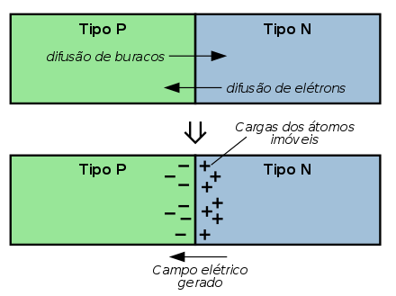

Célula Fotovoltaica
Como a Célula Fotovoltaica Funciona?
O efeito fotovoltaico é o processo físico pelo qual uma célula fotovoltaica converte luz solar em eletricidade. A luz solar é composta de fótons, ou partículas de energia solar. Estes fótons contém grande quantidade de energia, correspondente aos diferentes comprimentos de onda do espectro solar. Quando os fótons colidem com uma célula fotovoltaica, eles podem ser refletidos ou absorvidos, ou mesmo atravessar direto a célula. Somente os fótons absorvidos geram eletricidade. Quando isto acontece, é transferida a energia do fóton a um elétron em um átomo da célula (que é de fato um semicondutor). Com essa nova energia, o elétron sai de sua posição original no átomo para tornar parte da corrente, em um circuito elétrico. Deixando sua posição inicial, o elétron deixa uma "lacuna" para que outro elétron a ocupe. Propriedades especiais da células fotovoltaica (um campo elétrico nela embutido) fazem com que a correte produza uma DDP para que haja corrente em uma carga externa (como uma lâmpada incandescente, por exemplo).

O átomo de Silício
Toda a matéria é composta de átomos. Atómos, por sua vez, são compostos de prótons positivamente carregados, elétrons negativamente carregados e neutrons, neutros. O número igual de elétrons e protons torna um átomo eletricamente neutro. A energia de cada elétron depende de sua órbita. Elétrons mais afastados do núcleo possuem mais energia que os elétrons mais próximos do núcleo. O átomo de silício tem 14 elétrons, porém, somente os 4 últimos da camada de valência podem ser compartilhados. Estes quatro últimos elétrons apresentam um papel importante no efeito fotovoltaico.

Semicondutor tipo-N, tipo-P e o Campo Elétrico
Para induzir o campo elétrico dentro de uma célula fotovoltaica, são intercalados dois semicondutores separados. O "tipo N" e o "tipo P". Embora ambos os materiais sejam eletricamente neutros, o silício tipo-n tem elétrons em excesso e o tipo-p tem lacunas em excesso. Intercalando estes, cria-se uma junção P-N e cria-se um campo elétrico deste modo.
Quando estes dois semicondutores são intercalados, os elétrons em excesso do tipo-n fluem para o semicondutor do tipo-p, e os elétrons que deixaram o tipo-n criam então lacunas no mesmo. (O conceito de uma lacuna mover-se é como o de uma bolha em um líquido. Embora seja o líquido quem esteja se movendo de fato, é mais fácil descrever o movimento da bolha). Pelo fluxo de elétrons e lacunas, os dois semicondutores agem como uma bateria e criam um campo elétrico na junção P-N. É este campo que fazem os elétrons saltar para a superfície e os faz disponíveis para o circuito elétrico. No mesmo instante, as lacunas se movem para a direção oposta, para a superfície positiva onde elas esperam elétrons livres.